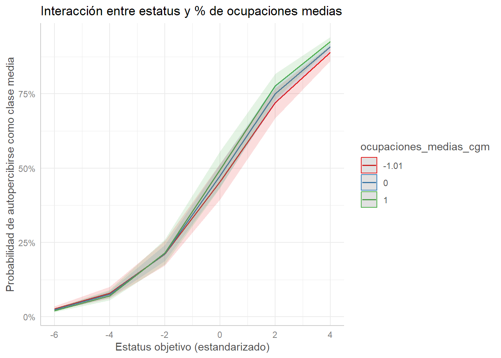

plot_model(mod3, type ="est", transform ="exp", # para mostrar Odds Ratiosshow.values =TRUE, value.offset =0.3,title ="Efectos fijos sobre la probabilidad de autopercibirse clase media",vline.color ="grey") +theme_minimal()
Code
re <-ranef(mod5)$anio_pais %>%as.data.frame() %>%rename(effect =`(Intercept)`) %>%mutate(anio_pais =rownames(ranef(mod5)$anio_pais)) %>%arrange(desc(effect)) %>%# Ordenar de mayor a menorslice(c(1:10, (n() -9):n()))ggplot(re, aes(x =reorder(anio_pais, effect), y = effect)) +geom_point() +coord_flip() +labs(x ="Año-País", y ="Efecto aleatorio (intercepto)", title ="Efectos aleatorios más fuertes por año-país") +theme_minimal() +theme(axis.text.y =element_text(size =5))
Code
re <-ranef(mod5)$pais %>%as.data.frame() %>%rename(effect =`(Intercept)`) %>%mutate(pais =rownames(ranef(mod5)$pais)) %>%arrange(desc(effect)) %>%# Ordenar de mayor a menorslice(c(1:10, (n() -9):n()))ggplot(re, aes(x =reorder(pais, effect), y = effect)) +geom_point() +coord_flip() +labs(x ="Año-País", y ="Efecto aleatorio (intercepto)", title ="Efectos aleatorios más fuertes por país") +theme_minimal() +theme(axis.text.y =element_text(size =5))
Code
library(ggeffects)plot(ggpredict(mod4c, terms =c("estatus_obj", "ocupaciones_medias_cgm [meansd]"))) +labs(title ="Interacción entre estatus y % de ocupaciones medias",x ="Estatus objetivo (estandarizado)",y ="Probabilidad de autopercibirse como clase media")

Code
# Asegurar que el nombre del país quede como columnaranef_slope <-ranef(mod5)$pais_f %>%as.data.frame() %>%rownames_to_column("pais") %>%rename(pendiente_estatus = estatus_obj) %>%arrange(desc(pendiente_estatus))# Gráfico de las pendientes aleatoriasggplot(ranef_slope, aes(x =reorder(pais, pendiente_estatus), y = pendiente_estatus)) +geom_point(color ="steelblue", size =3) +geom_hline(yintercept =0, linetype ="dashed", color ="gray50") +coord_flip() +labs(x ="País",y ="Pendiente aleatoria de estatus_obj",title ="Pendientes aleatorias de estatus objetivo por país" ) +theme_minimal(base_size =14)